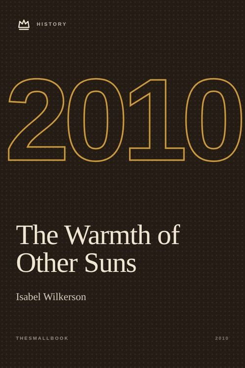

Library › Authors › Isabel Wilkerson
Books by Isabel Wilkerson
Isabel Wilkerson has 2 books in the library. Every book here is read down to the big idea, the lessons, the lines worth keeping and the actions worth taking. Start with the summary, then buy the full book if it earns a place on your shelf.

The Warmth of Other Suns
2010 · 11 min · 8 lessons
Isabel Wilkerson tells the Great Migration through the people who made it, from the Jim Crow south to the American north and west.
Between 1915 and 1970 millions of Black Americans left the south, and Wilkerson argues it was one of the central events of US history, as large as any immigration wave and less understood. Told through three lives, it is a book about what people carry, what they lose and what the receiving city does with them. The migration is not a statistic, it is a long series of specific departures.
Lessons in the summary
- Why People Leave
- Three Journeys
- What Was Carried
- The Arrival
- The North That Was Not Free
- The Cost of Uprooting
- What They Built
- The Inheritance
Lines worth keeping
- They were not leaving the south so much as being pushed out of it.
- The migrants carried the south with them, and the north was not prepared.
- A migration changes the place it leaves and the place it arrives, at once.
Caste
2020 · 11 min · 8 lessons
Isabel Wilkerson argues that caste, not race, is the better word for the hierarchy that has shaped America, India and Nazi Germany.
Wilkerson's move is comparative. Race is a physical description used as a justification; caste is the system of ranked human value underneath it. She identifies eight pillars that hold such systems up, from divine will to dehumanisation, and shows them operating in three countries. The point is not equivalence of experience, it is a shared architecture that can be named and therefore dismantled.
Lessons in the summary
- The Word
- Eight Pillars
- Divine Will and Nature
- Endogamy
- Dehumanisation
- The Middle Castes
- The Cost to Everyone
- Dismantling
Lines worth keeping
- Caste is the bones, race is the skin.
- A hierarchy needs a story that makes it feel natural, and pillars that hold it up.
- You do not have to be an actor in a caste system to be shaped by it.
Questions Isabel Wilkerson helps answer
Read nearby authors next
- Bill Bryson 2 books
- David Grann 2 books
- Ramachandra Guha 2 books
- Siddhartha Mukherjee 2 books
- Walter Isaacson 2 books
- William Dalrymple 2 books
- A.L. Basham 1 book
- Akio Morita 1 book